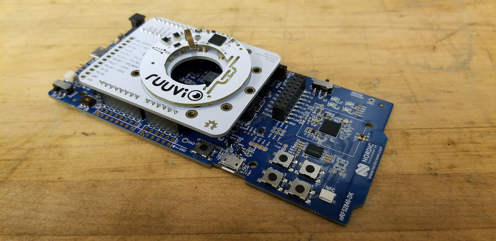

Wireless Occupancy Sensing
Undergraduate Research Assistantship

About the Project
Utilizing the ruuvi open source bluetooth module to develop a RF based device free occupancy detection system using bluetooth low energy technology. The system aims to detect and/or predict the presence of people in a room by analyzing parameters of RF signals such as recieved signal strength. Firmware is developed through Nordic Semiconductor's while utilizing machine learning models to improve prediction and accuracy of the system.